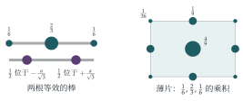

STEP II 1989，第 13 题
继续之前，请先阅读题目（原题为英文）。题目载于 STEP Support Programme 的题目资料库： step.maths.org/questions/89-s2-q13
引子
一根均匀棒（uniform rod）受到推动和旋转时，会有甚么反应？原来就力学上的一切用途而言，一根棒的表现与三个质点（point mass）完全相同：两端各占其质量的六分之一，中点占三分之二。无论你对这根棒做甚么（推它，或让它绕任何轴旋转），都无法把它与这三个质点区分开来。
\(\frac16\)、\(\frac23\)、\(\frac16\) 这几个数也许似曾相识。它们正是辛普森法则（Simpson’s rule）\(\int_{-a}^{a}f \approx 2a\bigl(\frac16f(-a) + \frac23f(0) + \frac16f(a)\bigr)\) 中的权（weight），这是你可能在高级程度（A level）课程中学过的数值积分（numerical integration）方法。这并非巧合：动力等效（dynamically equivalent）系统与数值积分法则，解决的其实是同一个问题。
转动惯量（moment of inertia）已于 2019 年从 STEP 考试范围中删去。一个物体对某轴的转动惯量是 \(\sum m_id_i^2\)，即每份质量乘以它与该轴距离的平方之总和（对连续物体而言则是一个积分）。质量为 \(m\)、长度为 \(2a\) 的均匀棒，对通过其中心的垂直轴的转动惯量为 \(\frac13ma^2\)。平行轴定理（parallel axis theorem）指出：对任何轴的转动惯量，等于对通过质心（centre of mass）的平行轴的转动惯量加上 \(md^2\)，其中 \(d\) 是两轴之间的距离。
动笔之前
两个系统的质量相同、质心相同，而且对通过质心的每一条轴的转动惯量也相同。为甚么平行轴定理随即保证，它们对其他任何轴的转动惯量也相同？
对任何轴而言，两个系统的转动惯量都等于（对通过 \(O\) 的平行轴的转动惯量）\(+ md^2\)。根据假设，第一项相同，而两个系统的 \(m\) 和 \(d\) 也相同。■
逐步解题
阶段 1 棒
在两端各放质量 \(p\)，在中点放质量 \(q\)。由对称性可知质心位置正确。总质量和对通过中心的垂直轴的转动惯量，分别要求甚么条件？
我们需要 \(2p + q = m\)，而对通过中点的垂直轴的转动惯量必须是 \(\frac13ma^2\)：\(2pa^2 = \frac13ma^2\)。所以 \(p = \frac16m\)，\(q = \frac23m\)。
这是否对通过中心的每一条轴都成立，而不只是垂直的那一条？
考虑一条通过中心、与棒成 \(\psi\) 角的轴：棒上与中心相距 \(r\) 的点，与该轴的距离为 \(r\sin\psi\)。因此每一个转动惯量（不论是棒的还是质点的）都是垂直轴情况下数值的 \(\sin^2\psi\) 倍，所以两者对所有 \(\psi\) 都相等。（不在包含棒的平面上的轴也是同样道理：只有各点与轴的距离才有关系，而对于一条通过 \(O\) 的直线上的点，这个距离与 \(r\) 成正比。）所以这根棒与质量 \(\frac16m\)、\(\frac23m\)、\(\frac16m\) 动力等效。■
阶段 2 长方形
把薄片（lamina）切成与其中一边平行的幼条，再把每一幼条换成它的三个等效质点。你会得到甚么？接下来又可以怎样做？
每一幼条都是一根棒，等效于把它质量的 \(\frac16\)、\(\frac23\)、\(\frac16\) 分别放在左边、中线和右边。把所有幼条加起来，薄片便等效于三根均匀棒（分别沿左边、中间和右边），质量为 \(\frac16M\)、\(\frac23M\)、\(\frac16M\)。现在再把这三根棒各自换成比例相同的三个质点。每一点的质量是两个分数之积（图 11.7.1）： \[\text{四角：} \tfrac16 \cdot \tfrac16 = \tfrac{1}{36}, \qquad \text{各边中点：} \tfrac16 \cdot \tfrac23 = \tfrac19, \qquad \text{中心：} \tfrac23 \cdot \tfrac23 = \tfrac49,\] 全部再乘以 \(M\)。■
（严格来说，每一次替换都必须保持对通过整块薄片中心的每一条轴的转动惯量不变，而事实确是如此：每一次替换都保持了该部分的质量、质心，以及对通过该部分质心的各轴的转动惯量，其余的就交给平行轴定理。）
阶段 3 正方形对其对角线
对于边长为 \(2a\) 的正方形，对角线通过两个角和中心，这些点没有任何贡献。另外两个角与对角线的距离为 \(\sqrt2a\)，而四个边的中点与它的距离为 \(\frac{a}{\sqrt2}\)。所以 \[I = 2 \cdot \tfrac{1}{36}M \cdot 2a^2 + 4 \cdot \tfrac19M \cdot \tfrac{a^2}{2} = \tfrac19Ma^2 + \tfrac29Ma^2 = \tfrac13Ma^2. \qed\] 这与对通过中心、平行于一边的轴的转动惯量相同。（这并非偶然：对正方形而言，在其平面上通过中心的所有轴都给出相同的答案，这可由练习中的一个对称性论证得出。）
阶段 4 非均匀棒
设棒的长度为 \(L\)，在距离其中一端 \(x\) 处的密度为 \(\frac{2mx}{L^2}\)。在 \(x = 0\)、\(\frac L2\)、\(L\) 处分别放质量 \(p_0\)、\(p_1\)、\(p_2\)。令总质量、质心和对该端的转动惯量一一吻合，便得到三条方程。它们是甚么？
这根棒的总质量为 \(m\)，对较轻一端的一阶矩（first moment）为 \(\int_0^L x \cdot \frac{2mx}{L^2}\,\mathrm{d}x = \frac23mL\)，二阶矩（second moment）为 \(\int_0^L x^2\cdot\frac{2mx}{L^2}\,\mathrm{d}x = \frac12mL^2\)。令这些量吻合： \[p_0 + p_1 + p_2 = m, \qquad \tfrac12Lp_1 + Lp_2 = \tfrac23mL, \qquad \tfrac14L^2p_1 + L^2p_2 = \tfrac12mL^2.\] 把第二式（除以 \(L\)）减去第三式（除以 \(L^2\)），得 \(\frac14p_1 = \frac16m\)，所以 \(p_1 = \frac23m\)，继而 \(p_2 = \frac13m\)，\(p_0 = 0\)。只需要两个质点：\(\frac23m\) 位于中点，\(\frac13m\) 位于较重的一端。■

回顾
令各阶矩吻合。动力等效的意思，就是令质量分布的零阶矩、一阶矩和二阶矩一一吻合。
逐个维度建构。长方形是由棒组成的棒，所以它的权是乘积。
数一数方程和未知数的数目。要吻合的矩有三个，未知的质量也有三个；而有时解中恰好会出现一个零。
背后的数学
辛普森法则
令质量分布的各阶矩吻合，与设计一条数值积分法则是同一个问题。一条法则 \(\int_{-a}^{a}f(x)\,\mathrm{d}x \approx w_0f(-a) + w_1f(0) + w_2f(a)\) 若对 \(f = 1, x, x^2\) 精确成立，就必须满足 \[w_0 + w_1 + w_2 = 2a, \qquad -aw_0 + aw_2 = 0, \qquad a^2w_0 + a^2w_2 = \tfrac23a^3,\] 这正是棒所要满足的条件（其中 \(f = 1, x, x^2\) 分别扮演质量、一阶矩和转动惯量的角色）。其解为 \(w = 2a(\frac16, \frac23, \frac16)\)：这就是辛普森法则。对称性还带来额外的收获：这条法则对 \(f = x^3\) 也精确成立，因为两边都等于零，所以辛普森法则能精确地积分三次多项式，而它对光滑函数的误差与四阶导数成正比。因此，一根棒与它的三个质点不仅在质量、质心和转动惯量上吻合，连三阶矩也吻合。
高斯求积法与惯性张量
如果位置和质量都可以自由选择，两个质点便已足够：在 \(\pm\frac{a}{\sqrt3}\) 两点各放一半质量。验算：\(2 \cdot \frac12m \cdot \frac{a^2}{3} = \frac13ma^2\)。这就是两点高斯－勒让德法则（Gauss–Legendre rule）\(\int_{-a}^{a}f \approx a\bigl(f(-\frac{a}{\sqrt3}) + f(\frac{a}{\sqrt3})\bigr)\)，它同样对三次多项式精确成立。高斯（Carl Friedrich Gauss）在 1814 年证明，只要巧妙地选取 \(n\) 个点，便能精确地积分次数为 \(2n - 1\) 的多项式；高斯求积法（Gaussian quadrature）如今已是数值分析（numerical analysis）的标准方法。
在力学中，一个物体对通过其中心的所有轴的转动惯量，都记录在一个 \(3 \times 3\) 对称矩阵之中，称为惯性张量（inertia tensor）。两个物体若质量、质心和惯性张量都相同，对所有力的反应便完全一样，这就是为甚么工程师在模拟中可以用几个质点取代一个复杂的部件。惯性张量的特征向量（eigenvector）就是主轴（principal axes），即物体可以绕之稳定旋转的轴。
思维技巧
如果两个系统在问题所涉及的每一个量上都一致，就把复杂的那个换成简单的那个。
这里只有三个矩有关系，所以一根连续的棒可以换成三个质点。在大学里，这个想法会以多种面貌出现：高斯求积法、电磁学和引力理论中的多极展开（multipole expansion）（在远处，电荷或质量分布只有头几个矩有影响），以及统计学中的矩估计法（method of moments）。
延伸练习
辛普森法则。用只有一个区间的辛普森法则估算 \(\int_0^1\frac{\mathrm{d}x}{1 + x^2}\)，并与 \(\frac\pi4\) 比较。验证这条法则对 \(\int_{-1}^{1}x^3\,\mathrm{d}x\) 和 \(\int_{-1}^{1}x^2\,\mathrm{d}x\) 精确成立，但对 \(\int_{-1}^{1}x^4\,\mathrm{d}x\) 则不然。
所有轴都一样。证明正方形薄片对在其平面上通过中心的任何轴的转动惯量都是 \(\frac13Ma^2\)。（提示：九个等效质点在旋转 \(90^\circ\) 之下是对称的；这对一个关于 \(\cos\psi\) 和 \(\sin\psi\) 的二次式说明了甚么？）
三角形。证明一块质量为 \(M\) 的均匀三角形薄片，与位于其三边中点、质量各为 \(\frac13M\) 的三个质点动力等效。
实心立方体。为一个均匀实心立方体找出一个由 \(27\) 个质点组成的动力等效系统，并用它求出边长为 \(2a\) 的立方体对其一条棱的转动惯量。
延伸阅读
Daniel Kleppner & Robert Kolenkow, An Introduction to Mechanics（Cambridge University Press），关于刚体和转动惯量的一章。
Endre Süli & David Mayers, An Introduction to Numerical Analysis（Cambridge University Press），关于数值积分的各章，包括辛普森法则和高斯求积法。
Philip Davis & Philip Rabinowitz, Methods of Numerical Integration（Dover）。经典参考书。